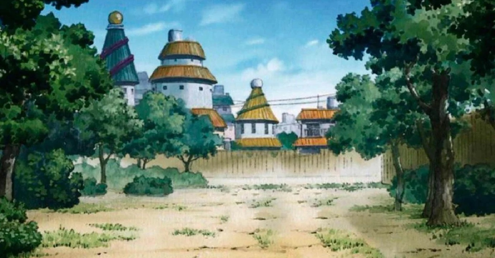

Ao longo da história dos animes, existem rivalidades aparentemente intransponíveis: Dragon Ball e sua influência intergeracional, One Piece e sua jornada sem fim, Pokémon vs Digimon, ou títulos modernos que conquistaram a atenção global, como Attack on Titan, Demon Slayer ou Jujutsu Kaisen. No entanto, quando se analisam os dados frios e concretos, surge um vencedor solitário, mas retumbante, pelo menos em termos de buscas de usuários: Naruto.
De acordo com a ferramenta Search Playground do Google, que utiliza dados do Google Trends de 2004 até o final de 2023, o anime de Masashi Kishimoto é o mais pesquisado no Google de todos os tempos, superando claramente os pesos pesados da indústria. Essa descoberta não apenas confirma a popularidade do jovem ninja loiro, mas também reflete como sua história conseguiu transcender barreiras culturais e geracionais de uma forma raramente vista.
Uma confirmação inesperada, mas lógica
À primeira vista, pode ser surpreendente que Naruto supere Dragon Ball ou One Piece em um ranking de buscas global. Afinal, a obra de Akira Toriyama é praticamente sinônimo de anime em grande parte da América Latina, enquanto o mangá de Eiichiro Oda consolidou a reputação de uma obra titânica que continua a conquistar fãs após mais de mil episódios.
Mas, analisando mais de perto, a conclusão se torna lógica. O anime de Masashi Kishimoto oferecia algo diferente: um shonen acessível, carregado de emoção e com um herói identificável. Enquanto Goku representava a força bruta e Luffy, a aventura sem fim, Naruto personificava a coragem da perseverança, a vulnerabilidade e o sonho impossível de ser reconhecido.
Essa nuance humana, aliada a uma narrativa que equilibrava batalhas espetaculares com momentos íntimos, fez com que fosse uma obra de nível básico perfeita para aqueles que estão se aproximando do anime pela primeira vez.
Dados do Google revelam um aspecto ainda mais impressionante: o domínio de Naruto persiste há quase 25 anos. Em um ecossistema onde as tendências mudam tão rapidamente quanto novos lançamentos, a permanência do ninja loiro como o anime mais pesquisado demonstra que isso não foi uma moda passageira, mas um fenômeno cultural permanente.
Mesmo quando a série principal terminou e os holofotes se voltaram para Boruto, o legado permaneceu intacto. As buscas se multiplicaram não apenas para relembrar batalhas icônicas como Naruto vs. Pain ou Sasuke vs. Itachi, mas também para analisar o simbolismo por trás dos personagens, o impacto de sua narrativa ou o resultado de sua longa jornada para se tornarem Hokage.
A rivalidade entre Naruto, Dragon Ball e One Piece provavelmente continuará viva nas conversas dos fãs. Mas os números do Google deram uma guinada definitiva na questão: nenhum outro anime foi tão procurado quanto Naruto na era digital.